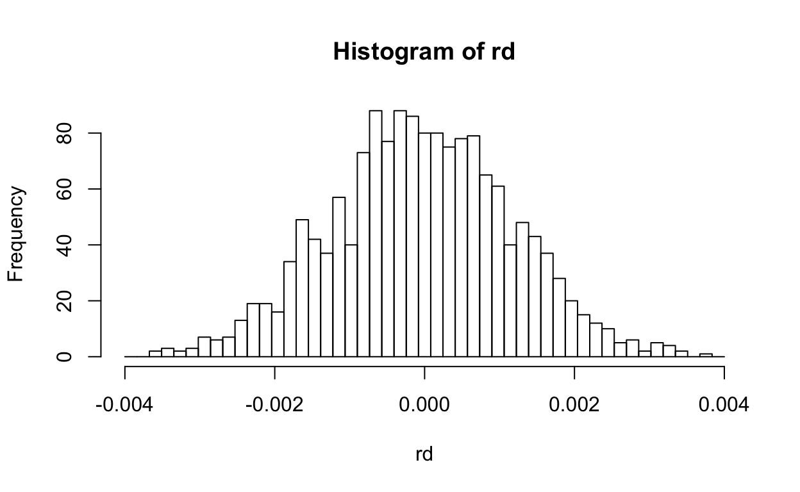
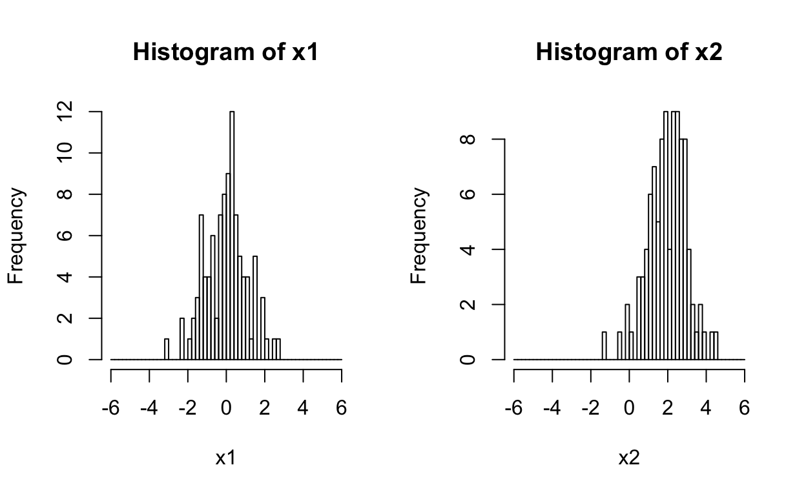

Chapter One: Statistical Analysis
- Author: Xie HE
- Graduate School of Economics, Kobe University
- Hamori Seminar
Preface
Introduction
This tutorial intoduces how to use R programming to implement analysis by Eviews in chapter 1 statistical analysis of book Eviewで学ぶ応用ファイナンス. In chapter one, there are four sections.
1.1 the fundamental knowledge of time series
1.2 model estimation by OLS
1.3 estimation of AR model
1.4 introduction of Kalman filter (see next week)
The eviews codes in book have been rewritten in R.
Necessary R packages
library(bizdays)
library(zoo)
library(moments)
library(tseries)
library(RQuantLib)For more details about above packages
- bizdays
https://cran.r-project.org/web/packages/bizdays/bizdays.pdf
- zoo
https://cran.r-project.org/web/packages/zoo/zoo.pdf
- moments
https://cran.r-project.org/web/packages/moments/moments.pdf
- tseries
https://cran.r-project.org/web/packages/tseries/tseries.pdf
- RQuantLib
https://cran.r-project.org/web/packages/RQuantLib/RQuantLib.pdf
1.1 The fundamental knowledge of time series
Generating time series
We not use real stock prices here but instead simulate two virtual stock prices following unit root process for analysis.
- Stock market index
- Stock prices of DCAM
Period: 2010-01-01~2015-12-31 (only business day)
Generating a date series
Firstly, we need to generate the data series from January 1st 2010 to December 31th 2015, and since only business days in the period are wanted, we use the create.calendar() function from bizdays package.
create.calendar("business_day", weekdays=c("saturday", "sunday"))
series_date=bizseq("2010-01-01", "2015-12-31", "business_day")
length(series_date)## [1] 1565What should we do if not only don’t want weekdays but also don’t want holidays? then you need load_quantlib_calendars() in bizdays package so that you can load a calender of one country from RQuantLib package, and run following codes:
# load calendar of Japan from RQuantLib
load_quantlib_calendars(ql_calendars = 'Japan', from="2010-01-01",
to="2015-12-31")## Calendar QuantLib/Japan loaded# set the calendar to bizseq function
series_date_jp=bizseq("2010-01-01", "2015-12-31", "QuantLib/Japan")
length(series_date_jp)## [1] 1471Exercise
Please generate a date series without weekdays and holidays in China from 2010-01-01 to 2015-12-31, and check the length of series.
ql_calendars='China'#Here is solution.
load_quantlib_calendars(ql_calendars = 'China', from="2010-01-01",
to="2015-12-31")
series_date_cn=bizseq("2010-01-01", "2015-12-31", "QuantLib/China")
length(series_date_cn)Generating stock market index
Next, we are going to simulate a time series following unit root process as stock market index. \[
\begin{equation}\nonumber
tx_t=tx_{t-1}+u_{2t}, u_{2t} \sim N(0,9)
\end{equation}
\] In here, you may need random gerneration, try rnorm() function:
rnorm(5,mean=0,sd=1) # random generation## [1] -0.3053553 -0.9165945 0.5492743 0.1720926 -0.9417707Then you can get 5 random numbers from standard normal distribution.
However, there is one thing you need to notice is that if you don’t set the random seed using set.seed(), you will get different random numbers each time you run the generating process.
rnorm(5,mean=0,sd=1)[1] -1.6582510 1.2223092 -1.1418077 -0.6760452 -1.1870880Here are some other functions about normal distribution:
dnorm(0,mean=0,sd=1) # probability density function## [1] 0.3989423pnorm(0,mean=0,sd=1) # cumulative distribution function## [1] 0.5qnorm(0.5,mean=0,sd=1) # quantile function## [1] 0Then, using rnorm, we can generate the stock market index:
tx=1000
set.seed(123456)
random=rnorm(length(series_date))
for(i in 1:length(series_date)){
tx=append(tx,tail(tx,1)+3*random[i])
}
tx_ts=zoo(round(tx,2),order.by = series_date)
plot(tx_ts)Generating stock prices of DCAM
And you can also simulate another time series as stock prices of DCAM based on the same method. \[ \begin{equation}\nonumber dcam_t=dcam_{t-1}+u_{1t}, u_{1t} \sim N(0,36) \end{equation} \]
dcam=5000
set.seed(1111)
random_2=rnorm(length(series_date))
for(i in 1:length(series_date)){
dcam=append(dcam,tail(dcam,1)+6*random_2[i])
}
dcam_ts=zoo(round(dcam,2),order.by = series_date)
plot(dcam_ts)Exercise
Please generate a time series from 2010-01-01 to 2015-12-31 (without weekdays) which following: \[ \begin{equation}\nonumber x_t=0.3x_{t-1}+0.6x_{t-2}+u_{t}, u_{t} \sim N(0,16) \end{equation} \] Notice:- The two initial values are given as 2000 and 2020.
- Set random seed as 100.
- The date series (
series_date) has already been defined, just use it directly.- Define the variable name of time series (zoo object) as ‘x_ts’
# x_t-1
tail(x,2)[2]
# x_t-2
tail(x,2)[1]#Here is solution.
x=c(2000,2020) #initial value
set.seed(100) #random seed
random_3=rnorm(length(series_date))
for(i in 1:length(series_date)){
x=append(x,0.3*tail(x,2)[2]+0.6*tail(x,2)[1]+4*random_3[i])
}
x_ts=zoo(round(x,2),order.by = series_date)
plot(x_ts)Please check if your plot just looks like:
Calculating return series
Here are return series of two series that are calculated by first difference in log.
rd=na.omit(diff(log(dcam_ts)))
rt=na.omit(diff(log(tx_ts)))
par(mfrow=c(2,1))
plot(rt)
plot(rd)Descriptive statistics
Next, we can check the descriptive statistics for series by using function descriptive() defined by ouselves. Here is the function:
descriptive=function(x){
jb=tseries::jarque.bera.test(x)
results=data.frame(
'Mean'=mean(x),
'Median'=median(x),
'Maximum'=max(x),
'Minimum'=min(x),
'Std.Dev'=sd(x),
'Skewness'=moments::skewness(x),
'Kurtosis'=moments::kurtosis(x),
'Jarque-Bera'=jb$statistic,
'Probability'=jb$p.value)
rownames(results)=NULL
return(results)
}Here are results of DCAM stock prices.
kable(descriptive(dcam_ts))| Mean | Median | Maximum | Minimum | Std.Dev | Skewness | Kurtosis | Jarque.Bera | Probability |
|---|---|---|---|---|---|---|---|---|
| 4937.195 | 4908.59 | 5294.09 | 4625.41 | 207.3339 | 0.1414688 | 1.528289 | 146.4571 | 0 |
Here are results of DCAM stock returns.
kable(descriptive(rd))| Mean | Median | Maximum | Minimum | Std.Dev | Skewness | Kurtosis | Jarque.Bera | Probability |
|---|---|---|---|---|---|---|---|---|
| -4.35e-05 | -4.77e-05 | 0.0037461 | -0.0036563 | 0.0012091 | -0.012795 | 2.926193 | 0.3976685 | 0.8196858 |
x_ts defined before.
Histogram of DCAM stock prices
Next, we are going to show the histogram of two series.
Here is the histogram of DCAM stock prices.
hist(dcam_ts,breaks = seq(4500,5500,length.out=50),freq = T)Here is the histogram of DCAM stock returns.
hist(rd,breaks = seq(-0.004,0.004,length.out=50),freq = T)
Check the results ofx_ts.
Normal distribution and t distribution
Testing a mean using t-test
In this section, we used two-tail t-test for if mean equal 0: \[ \begin{equation}\nonumber H_0:\mu=0,H_1:\mu \neq 0 \end{equation} \]
t-statistic: \[ \begin{equation}\nonumber t=\frac{\overline{X}-0}{\frac{s}{\sqrt{n}}} \end{equation} \]
Conducting t-test in R by using t.test() function:
t.test(rd,mu=0) # alternative = c("two.sided", "less", "greater")##
## One Sample t-test
##
## data: rd
## t = -1.4236, df = 1563, p-value = 0.1548
## alternative hypothesis: true mean is not equal to 0
## 95 percent confidence interval:
## -1.034958e-04 1.644553e-05
## sample estimates:
## mean of x
## -4.352512e-05t statics and p-value can be calculated by ourselves.
mu=mean(rd)
sd=sd(rd)
obs=length(rd)
h0=0
t=(mu-h0)/(sd/sqrt(obs))
p=pt(t,(obs-1))*2 #p=(1-pt(t,(obs-1)))*2, if t>0
c('t-value'=t,'p-value'=p)## t-value p-value
## -1.423593 0.154764Exercise
Conducting a one-tail t-test for mean of rd, calculate t-statistic and p-value by yourself and vertify your answer by using t.test(): \[
\begin{equation}\nonumber
H_0:\mu>0,H_1:\mu\leq 0
\end{equation}
\]
mu=mean(rd)
sd=sd(rd)
obs=length(rd)
h0=0# only p-value changed#Here is solution.
mu=mean(rd)
sd=sd(rd)
obs=length(rd)
h0=0
t=(mu-h0)/(sd/sqrt(obs))
p=pt(t,(obs-1))
c('t-value'=t,'p-value'=p)
t.test(rd,mu=0,alternative='less') Illustration of central limit theorem using Monte-Carlo Simulation
Central limit theorem
The central limit theorem states that if you have a population with mean μ and standard deviation σ and take sufficiently large random samples from the population with replacementtext annotation indicator, then the distribution of the sample means will be approximately normally distributed.
- Central limit theorem
If \(X_1, X_2, \dots, X_n\) are random samples and \(i.i.d \quad (\mu, \sigma^2)\), then:
\(Y_n=\frac{\sqrt{\hat{X}-\mu}}{\sigma}\),where \(\overline{X}_n=\frac{\sum^{n}_{i=1}X_i}{n}\),
\(s.t. \quad Y_n \overset{D}{\rightarrow} N(0,1)\)
Monte-Carlo Simulation
Monte Carlo methods, or Monte Carlo experiments, are a broad class of computational algorithms that rely on repeated random sampling to obtain numerical results.
obs=10
mu=170
sd=5
reps=1000
hgt=c()
m=c()
se=c()
t=c()
set.seed(1234)
random_3=matrix(rnorm(reps*obs),reps,obs)
for(i in 1:reps){
for(j in 1:obs){
hgt[j]=random_3[i,j]*sd+mu
}
m[i]=mean(hgt)
se[i]=sd(hgt)/sqrt(obs)
t[i]=(mu-m[i])/se[i]
}
hist(t,breaks = seq(-7,7,0.2),freq = F)
xfit=seq(-7,7,0.2)
yfit_1<-dnorm(xfit,mean=mean(t),sd=sd(t))
lines(xfit, yfit_1, col="blue", lwd=2)
yfit_2<-dt(xfit,obs-1)
lines(xfit, yfit_2, col="red", lwd=2)
legend(x = "topright", legend=c("normal distribution", "t distribution"),
col=c("blue", "red"),lty=c(1,1),cex=1)For more details about Illustration of central limit theorem using Monte-Carlo simulation, see the paper of Prof.kaiji motegi 計量経済学におけるモンテカルロ実験の基本:
http://www2.kobe-u.ac.jp/~motegi/gakushu_motegi_v7.pdf
1.2 Model estimation by OLS
Single index model
Next, we will try to fit a univariate linear regression model for return series. \[ rd_t=\alpha+\beta rt_t+u_t \] Here are estimation results.
eq01=lm(rd~rt)
eq01_sum=summary(eq01)
kable(eq01_sum$coefficients)| Estimate | Std. Error | t value | Pr(>|t|) | |
|---|---|---|---|---|
| (Intercept) | -0.0000432 | 0.0000306 | -1.4131350 | 0.1578153 |
| rt | -0.0078868 | 0.0105171 | -0.7499067 | 0.4534238 |
t-test for parameter in eq01
Then, we can conduct t-test for prarameter in eq01 by running:
b=eq01$coefficients[2]
se=eq01_sum$coefficients[2,2]
df=eq01$df.residual
t=(b-0)/se
p=pt(t,(df-1))*2
c('t-value'=t,'p-value'=p)## t-value.rt p-value.rt
## -0.7499067 0.4534239Coefficient of determination
\[ \begin{equation}\nonumber Y_i=\alpha+\beta X_i+u_i \end{equation} \] It has: \[ \begin{equation}\nonumber \hat{Y}_i=\hat{\alpha}+\hat{\beta}X_i, \overline{Y}=\hat{\alpha}+\hat{\beta}\overline{X} \end{equation} \] Coefficient of determination： \[ \begin{equation}\nonumber R^2=\frac{\sum (\hat{Y}_i-\overline{Y})^2}{\sum (Y_i-\overline{Y})^2} \end{equation} \] Adjusted coefficient of determination： \[ \begin{equation}\nonumber adj R^2=1-(1-R^2)\frac{n-1}{n-k} \end{equation} \]
We can check \(R^2\) and \(adj R^2\) by using summary() function easily:
summary(eq01)##
## Call:
## lm(formula = rd ~ rt)
##
## Residuals:
## Min 1Q Median 3Q Max
## -0.0035931 -0.0007800 -0.0000106 0.0008141 0.0037715
##
## Coefficients:
## Estimate Std. Error t value Pr(>|t|)
## (Intercept) -4.322e-05 3.058e-05 -1.413 0.158
## rt -7.887e-03 1.052e-02 -0.750 0.453
##
## Residual standard error: 0.001209 on 1562 degrees of freedom
## Multiple R-squared: 0.0003599, Adjusted R-squared: -0.0002801
## F-statistic: 0.5624 on 1 and 1562 DF, p-value: 0.4534Log-likelihood
The likelihood function (often simply called the likelihood) measures the goodness of fit of a statistical model to a sample of data for given values of the unknown parameters.
set.seed(111)
random_4=matrix(rnorm(200),100,2)
x1=random_4[,1]
x2=random_4[,2]+2
den1=dnorm(x1)
den2=dnorm(x2)
logl1=sum(log(den1))
logl2=sum(log(den2))
logl1## [1] -148.6652logl2## [1] -339.9499Here are histogram of two series:
par(mfrow=c(1,2))
hist(x1,breaks = seq(-6,6,0.2),freq = T)
hist(x2,breaks = seq(-6,6,0.2),freq = T)
We can use R function LogLik() to obtain Log-likelihood of eq01 or calculate by ourselves.
robs=length(eq01$fitted.values)
k=2
e2=(eq01$residuals)^2
#likelihood
logl=-(robs/2)*(1+log(2*pi)+log(sum(e2)/robs))
logLik(eq01)## 'log Lik.' 8288.287 (df=3)logl## [1] 8288.287Information criterion
Akaike information criterion (AIC)
- AIC in Eviews: \[
\begin{equation}\nonumber
AIC=-2(l/T)+2(k/T)
\end{equation}
\]
- AIC in R: \[
\begin{equation}\nonumber
AIC=-2l+2k
\end{equation}
\]
We can use R functionAIC()to obtain AIC of eq01 or calculate by ourselves. As you see, the results are little different. In fact, k should be number of variables, that is 2. However,AIC()usedk=3, is it a bug?
aic=-2*logl+2*k
aic_2=AIC(eq01)
aic_3=-2*logl/robs+2*k/robs
c(aic,aic_2,aic_3)## [1] -16572.57422 -16570.57422 -10.59628Bayesian information criterion (BIC)
- BIC in Eviews: \[
\begin{equation}\nonumber
BIC=-2(l/T)+klog(T)/T
\end{equation}
\]
- BIC in R: \[ \begin{equation}\nonumber BIC=-2l+klog(T) \end{equation} \]
bic=-2*logl+log(robs)*k
bic_2=BIC(eq01)
bic_3=-2*logl/robs+log(robs)*k/robs
c(bic,bic_2,bic_3)## [1] -16561.86422 -16554.50921 -10.58943Hannan–Quinn information criterion (HQC)
- HQC in Eviews: \[ \begin{equation}\nonumber HQC=-2(l/T)+2klog(log(T))/T \end{equation} \]
hqc=-2*logl/robs+2*k*log(log(robs))/robs
hqc## [1] -10.59373ACF and PACF
- Autocorrelation Function (ACF): \[
\begin{equation}\nonumber
\rho_k=\frac{\sum_{t=k+1}^{T}(Y_t-\overline{Y})(Y_{t-k}-\overline{Y})}{\sum_{t=1}^{T}(Y_t-\overline{Y})^2}
\end{equation}
\]
- Partial Autocorrelation Function (PACF):
The partial autocorrelation function is a measure of the correlation between observations of a time series that are separated by k time units (\(y_t\) and \(y_{t–k}\)), after adjusting for the presence of all the other terms of shorter lag (\(y_{t–1}, y_{t–2}, ..., y_{t–k–1}\)).
ACF and PACF of DCAM stock prices
par(mfrow=c(1,2))
acf(dcam,main='ACF plot of Stock Price of DCAM')
pacf(dcam,main='PACF plot of Stock Price of DCAM')Try
Please check the ACF and PACF plots ofx:
Ljung-Box test
The Ljung–Box test is a type of statistical test of whether any of a group of autocorrelations of a time series are different from zero. \[
\begin{equation}\nonumber
H_0:\rho_1=\rho_2=\dots=\rho_m=0\\
H_1:\exists k\in [1,m], \quad s.t. \quad \rho_k \neq 0
\end{equation}
\] Q-statistic: \[
\begin{equation}\nonumber
Q(m)=T(T+2)\sum_{k=1}^{m}\frac{{\hat{\rho}_k}^2}{T-k} \sim \chi^2(m)
\end{equation}
\] We can conduct Ljung–Box test in R by using Box.test() function:
for( i in 1:13){
LB_test=Box.test(dcam_ts, lag = i, type ="Ljung-Box")
print(c(i,round(unname(LB_test$statistic),2),LB_test$p.value))
}## [1] 1.00 1563.64 0.00
## [1] 2.00 3124.31 0.00
## [1] 3.00 4682.83 0.00
## [1] 4.00 6238.81 0.00
## [1] 5.00 7791.44 0.00
## [1] 6.00 9344.37 0.00
## [1] 7.00 10899.36 0.00
## [1] 8.00 12447.56 0.00
## [1] 9.00 13987.09 0.00
## [1] 10.00 15524.74 0.00
## [1] 11.00 17059.97 0.00
## [1] 12.00 18591.62 0.00
## [1] 13.00 20129.24 0.00Try
Please check Ljung–Box test results ofx_ts to lag 10:
1.3 Estimation of AR model
Fitting AR model by ordinary least squares
Considering a AR(1) model for DCAM stock prices: \[ \begin{equation}\nonumber dcam_t=\beta_0+\beta_1dcam_{t-1}+u_t \end{equation} \]
The function ar.ols() allows us to fit an autoregressive time series model to the data by ordinary least squares, by default selecting the complexity by AIC in R.
ar.ols(dcam,
order.max = 1,
demean = F,
intercept = T)##
## Call:
## ar.ols(x = dcam, order.max = 1, demean = F, intercept = T)
##
## Coefficients:
## 1
## 1.0001
##
## Intercept: -0.6776 (3.586)
##
## Order selected 1 sigma^2 estimated as 35.4It can be rewritten as: \[ \begin{equation}\nonumber dcam_t=\alpha +u_t\\ u_t=\rho_1u_{t-1}+\epsilon_t \end{equation} \]
Fitting AR(1) model using AR term:
#estimated by using conditional-sum-of-squares
AR1_1<- arima(dcam_ts, order = c(1,0,0),method='CSS')
AR1_1##
## Call:
## arima(x = dcam_ts, order = c(1, 0, 0), method = "CSS")
##
## Coefficients:
## ar1 intercept
## 1.0003 4937.201
## s.e. NaN NaN
##
## sigma^2 estimated as 34.8: part log likelihood = -4998.25#estimated by using maximum likelihood
AR1_2 <- arima(dcam_ts, order = c(1,0,0),method='ML')
AR1_2##
## Call:
## arima(x = dcam_ts, order = c(1, 0, 0), method = "ML")
##
## Coefficients:
## ar1 intercept
## 0.9996 4936.2122
## s.e. 0.0004 190.3864
##
## sigma^2 estimated as 30.38: log likelihood = -5067.29, aic = 10140.59Try
Do you remember howx_ts was defined?That is:
\[ \begin{equation}\nonumber x_t=0.3x_{t-1}+0.6x_{t-2}+u_{t}, u_{t} \sim N(0,16) \end{equation} \] please fit appropriate AR model for
x_ts using three methods mentioned above.
Quiz
References
森平爽一郎, 高英模, 2019, 『Eviewで学ぶ応用ファイナンス』, 日本評論社
羽森茂之, 2018, 『ベーシック計量経済学 第２版』, 中央経済社
茂木快治, 2018, 計量経済学におけるモンテカルロ実験の基本, 経済学・経営学学習のために, 2018, 19-28
沖本竜義, 2019, 『経済.ファイナンスデータの計量時系列分析』, 朝倉書店
1.4 Introduction of Kalman filter
If you want know about Kalman filter in advance, the youtube vedio series of matlab that introduce Kalman filter may be helpful.